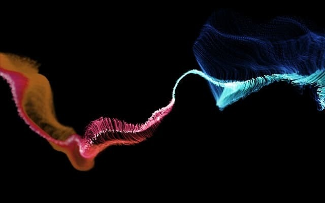

クロウ・深瀬症候群の鍼灸
末梢神経障害やむくみなど全身症状を呈するPOEMS症候群に対し、専門医治療を最優先に安定期の穏やかな補完ケアを行います。
まず知っておきたい要点と改善の流れ
クロウ・深瀬症候群（POEMS症候群）は、骨髄やリンパ節で異常増殖した形質細胞から血管内皮増殖因子（VEGF）などのサイトカインが過剰分泌され、多発性神経障害、臓器腫大、内分泌異常、Mタンパク血症、皮膚変化、胸水・腹水や浮腫など全身に多彩な症状を起こす指定難病です。未治療では麻痺の進行や心不全・腎不全など命に関わる危険があるため、血液内科・脳神経内科など複数専門医による化学療法や移植・薬物管理が絶対的に最優先となります。（公式解説）
このようなお悩みはありませんか？
- ✓専門医でPOEMS症候群の治療を受けながら、手足のしびれやだるさがつらい
- ✓病状が安定している時期に、体への負担が少ない補完ケアを相談したい
- ✓むくみや疲労感、睡眠の乱れなど日常のつらさを少しでも和らげたい
- ✓主治医の方針を尊重し安全面に配慮してくれる鍼灸院を探している
当院の施術アプローチ・改善の流れ
なぜ鍼灸で改善へ向かうのか？（作用機序の図解）
クロウ・深瀬症候群に対する鍼灸は、耳周囲・頸部の微小循環改善と聴覚・粘膜調整機序を通じて、お体本来の回復力を引き出します。

翳風・風池・合谷など、耳鼻咽喉領域の神経・血管と連動する経穴へ繊細にアプローチします。
首・顎まわりの深層筋緊張を緩め、内耳や粘膜周囲の滞った血流とリンパ循環を促します。
ストレスや睡眠不足で高ぶった交感神経を鎮め、音への過敏反応や粘膜の過剰反応を和らげます。
標準治療を妨げない設計で、生活支障度（THI等）の軽減と再発しにくい体調づくりを支えます。
院長YouTube解説・関連動画
クロウ・深瀬症候群の原因には血管内皮増殖因子が関係している

クロウ・深瀬症候群の原因は詳しくはあきらかになっていません。
今のところ、骨髄や一部のリンパ節に形質細胞ができ、増えてしまうことによって血管内皮増殖因子というタンパク質ができ、症状が現れていると言われています。
血管内皮増殖因子は血管の増殖をすすめ、体液の血管の外への透過性を亢進させる働きをします。そのためにいろいろな症状が現れるのです。
クロウ・深瀬症候群、別名POEMS症候群は、多岐にわたる臨床症状を持つ希少な病気で、正確な原因はまだ完全には解明されていませんが以下の要因が関与していると考えられています。
単クローン性プラズマ細胞増殖症:POEMS症候群は、単クローン性プラズマ細胞の異常増殖と関連しています。この異常増殖により、特定の免疫グロブリン（モノクローナルプロテイン）が産生され、体内の様々な器官に影響を与えると考えられています。
サイトカインの異常分泌:異常増殖したプラズマ細胞が、炎症や組織損傷に関与するサイトカイン（例：VEGF、TNF-α、IL-1、IL-6）を過剰に分泌することが、POEMS症候群の症状を引き起こす一因とされています。VEGF（血管内皮成長因子）の過剰な分泌は、特にこの症候群の特徴である血管新生や水腫の原因となる可能性が高いです。
遺伝的要因:遺伝的要因がこの症候群の発症に関与している可能性は指摘されていますが、具体的な遺伝子や遺伝的メカニズムはまだ明確には特定されていません。
免疫学的要因:免疫系の異常もPOEMS症候群の発症に関連していると考えられています。
クロウ・深瀬症候群の改善方法は確立されていない
クロウ・深瀬症候群の改善方法は確立されていません。
異常形質細胞による骨病変が1箇所だけの場合は、骨病変を取り除いたり放射線を照射したりして改善を行います。
しかし、骨病変がいくつもあったりいくつあるかが分からなかったりする場合は、副腎皮質ホルモンや抗がん剤を使って改善を行います。
近年は、自分の細胞を使って移植する改善方法で、症状が非常に軽くなったという報告があります。
そのため、全身の状態が良い65歳以下の人の場合は、この方法で改善を行うことで、症状が落ち着き日常生活にあまり影響がない状態になることが期待されています。
クロウ・深瀬症候群の改善法は、症候群の複雑な性質と多様な症状を考慮して、個々に合わせて行われます。
抗がん剤:POEMS症候群は、単クローン性プラズマ細胞異常に関連しているため、抗がん剤が用いられることがあります。メルファラン、シクロホスファミド、レナリドミドなどの薬剤が使用されます。
放射線:単一のプラズマ細胞腫が原因である場合、放射線が効果的な選択肢となることがあります。
ステロイド:ステロイドは、炎症を減少させ、症状の緩和に役立ちます。
幹細胞移植:一部では、自己幹細胞移植が症状の改善に効果的です。特に若くて他の重大な健康問題がない場合に対して推奨されることがあります。
症状に対する対処:神経症状に対しては、神経痛に対する薬物（例：ガバペンチン）が処方されることがあります。内分泌異常に対しては、ホルモンの補充が必要になることがあります。浮腫に対しては利尿剤の使用が考慮されます。
サポート法:栄養補助、理学法、心理社会的支援などが重要です。
計画は症状、全身状態、病状の進行度によって異なります。POEMS症候群は多系統に影響を及ぼすため、改善は複数の専門家によるチームアプローチで行われることが一般的です。
クロウ・深瀬症候群の改善に用いられる薬は、症状の重症度と個々の状態に基づいて選択されます。以下に主な薬の種類とその使用目的を説明します。
メルファラン: しばしばPOEMS症候群に使用される薬です。
レナリドミド: イムノモジュレーターであり、プラズマ細胞の増殖を抑制します。
シクロホスファミド: 免疫系に作用し、異常プラズマ細胞の増殖を抑制する薬です。
デキサメタゾン:炎症を軽減し、化学療法の効果を高めるために使用されます。
ベバシズマブ: VEGF（血管内皮成長因子）を阻害し、血管新生を減少させる薬剤です。
ガバペンチンやプレガバリン: 神経痛を和らげるために処方されます。
利尿剤:浮腫に対して利尿剤が用いられることがあります。
これらの薬は、POEMS症候群に伴うさまざまな症状や合併症を管理するために使用されます。
突発性難聴・耳管不調・顎関節症のツボ図解
実際の施術ではお一人おひとりの体質・症状に合わせて選穴しますが、突発性難聴・耳管開放症/狭窄症・顎関節症・食いしばりのケアの臨床でよく用いられる代表的なツボの目安です。

📌 代表的なツボの詳細一覧表を開く（6穴） ▼
| ツボ名 | 位置の目安 | 主な狙い | セルフケアの注意点 |
|---|---|---|---|
| 耳門（じもん） | 耳の穴の前上、口を開けるとくぼむ上部 | 耳鳴り・耳閉感・側頭部の緊張緩和 | 突発性難聴は発症48時間以内の耳鼻科受診が最優先です。 |
| 聴宮（ちょうきゅう） | 耳の穴の真ん中の前、口を開けるとくぼむ所 | 内耳の微小循環・聴覚過敏や耳管不調のサポート | 口を軽く開けた状態で優しく触れます。 |
| 聴会（ちょうえ） | 耳たぶの付け根の前、口を開けるとくぼむ下部 | 耳周囲と顎関節の連動緊張を和らげるツボ | 強く押し込まず心地よい範囲で刺激します。 |
| 翳風（えいふう） | 耳たぶのすぐ後ろのくぼみ | 内耳循環と自律神経（迷走神経枝）の調整 | 耳周囲の冷え対策に蒸しタオルも有効です。 |
| 下関（げかん） | 耳の前、頬骨のアーチの下のくぼみ（顎関節部） | 顎関節症・食いしばり・咬筋のこわばり緩和 | 口を開閉して痛みが出る場合は無理に動かさず優しく押します。 |
| 中渚（ちゅうしょ） | 手の甲、薬指と小指の骨の間（拳のくぼみ） | 三焦経の要穴として耳の不調を遠隔から整えるツボ | 耳に触れにくい急性期でも安全に使える遠隔穴です。 |
国際査読論文の科学的エビデンス
国際的な医学データベース（PubMed・Cochrane等）で報告されている突発性難聴・耳管開放症/狭窄症・顎関節症・食いしばりのケア領域の代表的な査読済み鍼灸研究をまとめています（標準治療との併用や研究上の限界を含めて正確に掲載）。
📚 査読論文データ・PubMed出典リンクを開く（4件） ▼
| 年・研究デザイン | 対象・規模 | 主な結果 | 限界・出典 |
|---|---|---|---|
| 2013年 大規模多施設RCT | 季節性アレルギー性鼻炎 422名（ドイツ） | 7〜8週のRQLQ QOLがシャム比0.5点・薬単独比0.7点改善（P<0.001）、頓用薬使用も有意減少（P<0.001）。 | 1年目16週では群間差消失、臨床的意義は慎重評価。 Ann Intern Med (PMID: 23420231) |
| 2021年 メタ解析 | 耳鳴り 8 RCTs（n=504） | 生活支障度THI（MD -10.11, p<0.001）・TSI（MD -8.36, p<0.001）が有意改善。VASは有意差なし（p=0.06）。 | 組入れRCTの質・サンプル規模に限界あり。 Acupunct Med (PMID: 32772848) |
| 2026年 ネットワークメタ解析 | 突発性難聴 36研究（n=3,360・標準治療併用） | ステロイド等の標準治療への鍼灸併用で総有効率RR 1.19（p<0.0001）、3週間コースが推奨。 | エビデンス確実性は低く標準治療（早期ステロイド）併用が前提。 Complement Ther Med (PMID: 42918509) |
| 2023年 メタ解析 | 成人顎関節症 22 RCTs統合（n=471） | 標準治療併用で有効率RR 1.36・疼痛VAS MD -1.23と有意改善。 | GRADE確実性は低〜非常に低、さらなる高品質RCTが必要。 Medicine (PMID: 37746950) |
参考文献・出典
- 銀座そうぜん鍼灸院「クロウ・深瀬症候群の公式解説ページ」
- 2013年 大規模多施設RCT（季節性アレルギー性鼻炎 422名（ドイツ））— Ann Intern Med (PMID: 23420231)
- 2021年 メタ解析（耳鳴り 8 RCTs（n=504））— Acupunct Med (PMID: 32772848)
- 2026年 ネットワークメタ解析（突発性難聴 36研究（n=3,360・標準治療併用））— Complement Ther Med (PMID: 42918509)
- 2023年 メタ解析（成人顎関節症 22 RCTs統合（n=471））— Medicine (PMID: 37746950)
よくある質問（FAQ）
Q. クロウ・深瀬症候群の根本治療として鍼灸を受けられますか？▼
Q. むくみや息苦しさが急に出てきた時はどうすればよいですか？▼
あわせて読まれる関連疾患（耳鼻咽喉のお悩み）
ある日突然片耳などが聞こえにくくなる感音難聴です。発症早期の耳鼻科ステロイド治療を最優先に、早期併用や回復期の耳鳴り・めまいをケアします。
実際には音がないのに耳の中で雑音が聞こえる状態です。耳の血流や自律神経・脳の過敏さを整えるケアで軽減を目指します。
リンパ管が袋状に膨らむ巨大リンパ管奇形に対し、専門医管理最優先・病変部刺鍼禁忌を守り安定期の全身ケアを支援します。
高度難聴から年月を経て回転性めまいを繰り返す遅発性内リンパ水腫に対し、専門医管理下で安定期のめまい誘因ケアを行います。
肺胞壁が徐々に硬くなり息切れや乾いた咳が生じる指定難病です。呼吸器専門医の治療を最優先に、安定期の呼吸のしやすさと体力を補完的に支えます。
生まれつき声帯直下が狭い指定難病。専門医の気道管理・手術を最優先に、安定期・主治医許可下で穏やかな補完的ケアを行います。
おひとりで悩まず、まずはご相談ください
銀座本院・川口・大宮・横浜・博多・田無の各院でご予約を承っております。